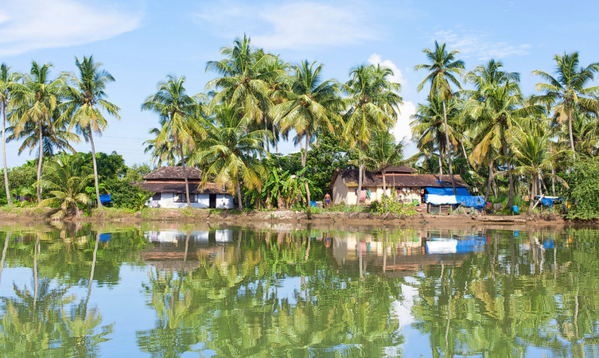
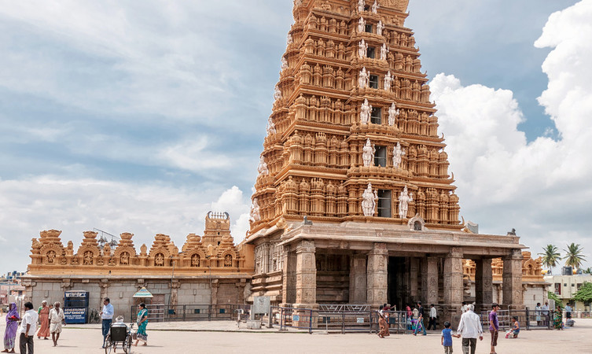
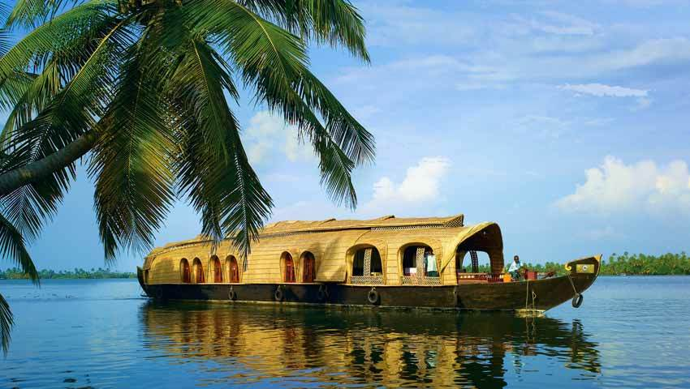
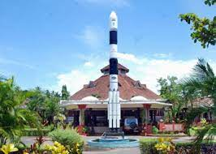
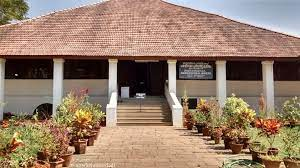

Places To Visit
Kozhikode Beach

Situated on the Malabar coast and endowed with natural beauty,Kozhikode beach should be a must in the itinerary of your visit to the city.
Kadalundi Bird Sanctuary
Kadalundi Bird Sanctuary is the perfect tourist spot for bird watchers and nature lovers.It is Just 19 km away from Kozhikode.
Srikanteshwara Temple
Take a break from daily life and pay a visit to the Srikanteshwara Temple in Kozhikode. On your visit to Kozhikkode you must add this temple to your list.
Popular Things To Do
Explore the backwaters of Kozhikode
The virgin and clear Kozhikode backwaters provide visitors a chance to explore the natural beauty of Kerala at its prime. It has palm trees dotted all along the water banks and the canal and lakes offer the guests perfect houseboat cruising.
Regional Science Center and Planetarium
The Regional Science Center and Planetarium is located on Museum Road in Kozhikode. It has a 250 seater Planetarium which offers visitors an extensive insight into the mysterious universe, planets and all the galaxies.
Pazhassiraja Archaeological Museum
Formerly known as the East Hill Bungalow, the museum was renamed in 1970. It is named after the great Pazhassiraja Kerala Varma of the Kottayam Royal Family who led the famous “Pazhassi Revolt” against the British imperialism.